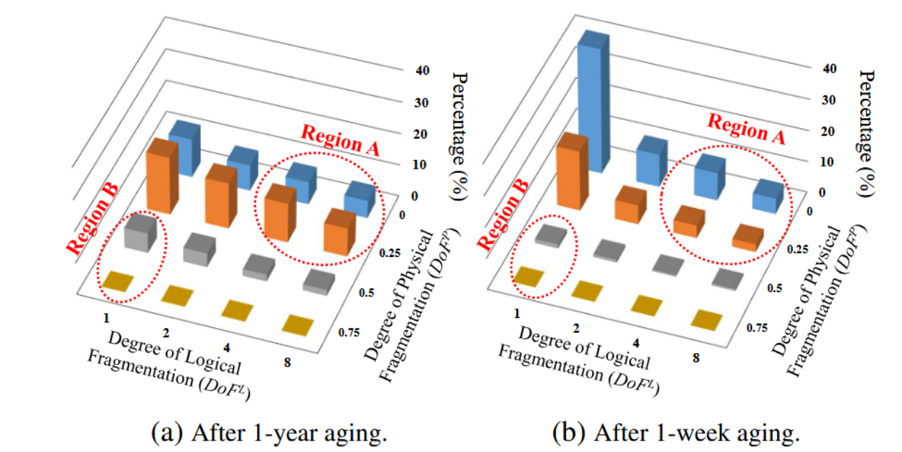
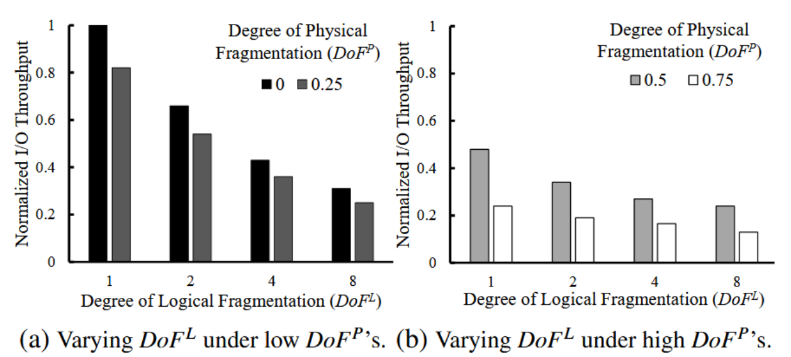
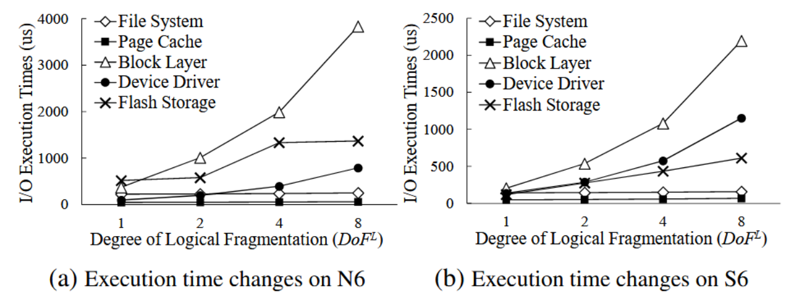

Improving File System Performance of Mobile Storage Systems Using a Decoupled Defragmenter
对闪存存储的文件碎片化进行表征研究
碎片程度的定义
- 逻辑碎片程度 (DoFL)：文件x分配的范围数与文件x所需最少范围数之比。
- 物理碎片程度 (DoFP)：顺序访问文件x时的平均I/O并行度与闪存存储系统支持的最大I/O并行度之比。
实验设计
通过模拟一年和一周的工作负载，测量Ext4文件系统老化后的DoFL和DoFP值的变化，以了解逻辑和物理碎片在闪存存储中的相互作用。
结果与分析
根据实验结果显示的图像，我们观察到两个区域：

区域A：表示逻辑碎片化程度高，但物理碎片化程度不高的文件比例。
区域B：表示物理碎片化程度高，但逻辑碎片化程度不高的文件比例。
结论：逻辑碎片和物理碎片是高度解耦的。即逻辑碎片化与文件在闪存上能否充分利用并行度并没有必然联系（这个结论与FAST 24的Best Paper本质上是相符的）
逻辑碎片化和物理碎片化对I/O性能的影响不同：逻辑碎片化会增加系统软件I/O堆栈的开销，而物理碎片化会降低闪存中的I/O并行性。因此作者提出，文件碎片化整理工具既需要再逻辑上整理文件碎片，又需要在物理闪存上整理碎片。
逻辑碎片化对性能的影响
作者测量了不同DoFL和DoFP下读取文件的性能。结果表明，随着DoFL的增加，读取性能降低。

作者还对DoFL从1（无碎片）到8（大量碎片）的I/O执行时间进行了测试。结果显示，块层和设备驱动程序的时间随DoFL值的增加而增加，而文件系统和页面缓存层的时间几乎没有受到影响。这暗示了逻辑碎片化对系统的影响主要体现在块层和设备驱动程序中。但让我感到疑惑的一点是：为什么在他给出的结果中，闪存消耗的时间竟然比块层消耗的时间还要少？

物理碎片化对性能的影响
- 根据上一节给出的测试中可以得出，在相同DoFL下，物理碎片化程度越高，读取性能也越差
- 但作者根据碎片化表征研究中的结果认为，大部分文件的物理碎片化程度较少。因为闪存存储内部有丰富的 I/O 并行性，文件不太可能遭遇极低的 I/O 并行性。
解决方案
提出了一个用户层工具，分别在逻辑和物理上对文件碎片进行整理，但以逻辑整理为主。
逻辑碎片整理
主要过程为：①对当前文件系统中所有文件的逻辑碎片化情况进行监控，筛选出逻辑碎片化程度较高的文件列表。②向闪存FTL发送碎片整理命令。③FTL执行映射表的重映射，然后将更新后的逻辑块地址（LBA）返回给文件系统，以便文件系统进行相应的LBA更新。
FTL映射表更新及文件系统更新过程如下图所示：
由于闪存页中OOB的反向映射无法修改，因此为了掉电恢复，会将LBA重映射的信息写入到闪存中。掉电恢复过程如下图所示：
当FTL更新映射完成，文件系统修改LBA成功后，会在Defrag Log后添加一个commit标志，以便掉电恢复时roll back。
若文件内容因为GC被移动到新的物理位置，则会更新相应的映射表信息和日志：
物理碎片整理
略，此部分不是本文重点